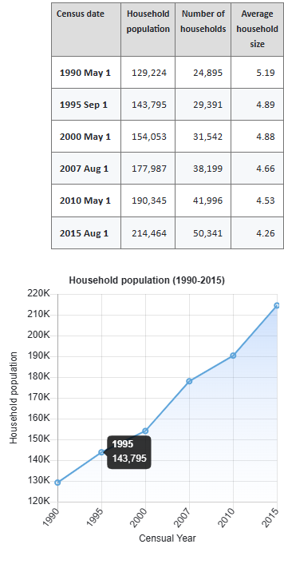
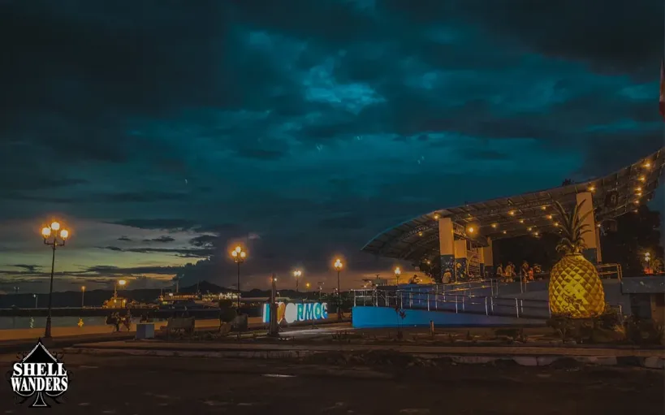
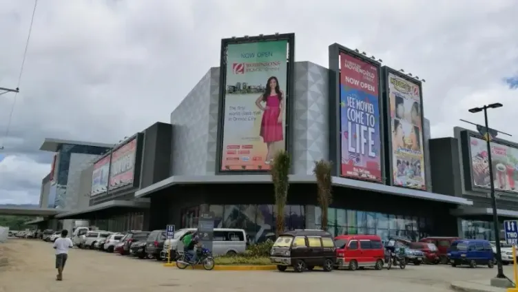
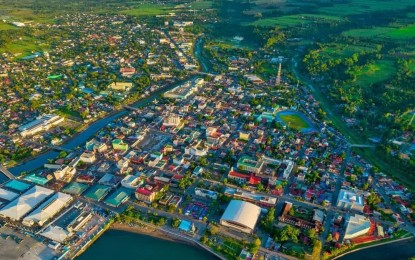
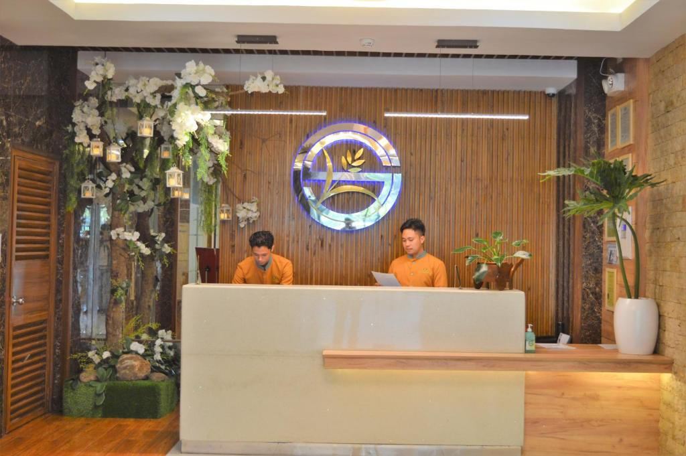
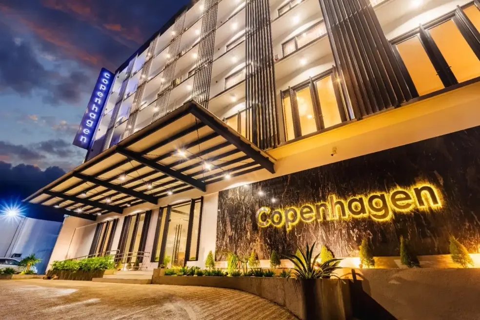

Ormoc, officially the City of Ormoc, is a 1st class independent component city in the Eastern Visayas region of the Philippines.
According to the 2020 census, it has a population of 230,998 inhabitants, making it the second most-populous city in the province
of Leyte after the provincial capital of Tacloban.
Households

The household population of Ormoc in the 2015 Census was 214,464 broken down into 50,341 households or an average of 4.26 members per household.
Calendar

Ormoc City PlazaOrmoc City Night Market

Robinson's Mall

Ormoc City Drone Shot

Hotel Reception

Ormoc City Hotel